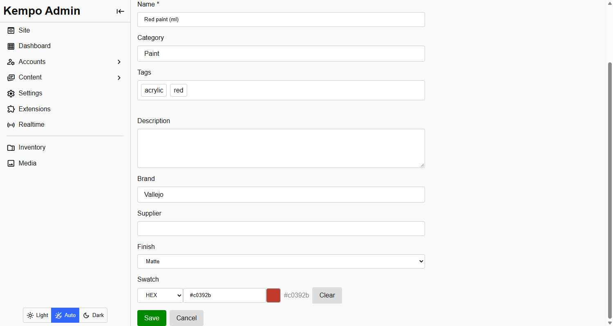
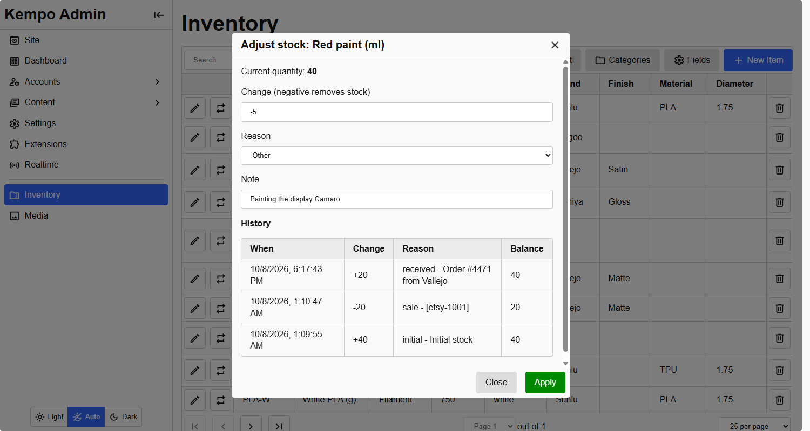

<page pageName="Items and stock" title="Items and stock - Kempo Inventory">
  <content>
    <h2 id="items">Items</h2>
    <p>An item has a <strong>SKU</strong> (unique), a <strong>name</strong>, a <strong>quantity</strong>, a <strong>description</strong>, an optional <a href="./fields.html#categories">category</a>, optional <a href="#tags">tags</a>, and whatever <a href="./fields.html#custom-fields">custom fields</a> you have set up.</p>
    <p>Text is stored without leading or trailing spaces, and a value of only spaces counts as empty. That keeps <code>FolkArt</code> and <code>FolkArt </code> from becoming two brands.</p>

    <div class="mb">
      
      <small class="d-b tc-muted">An item's page. The fields below Description are custom fields: Brand and Supplier are for every item, Finish and Swatch only appear because this item is in the Paint category.</small>
    </div>

    <p><strong>Adding and editing an item are pages, not dialogs.</strong> A dialog closes with a stray tap outside it and takes everything entered with it, including photos taken with a camera. These pages keep your work, and while anything entered has not been saved, leaving the page (a link, the back button, a refresh) asks first. <strong>Create and add another</strong> starts a fresh, empty form for the next item.</p>
    <p>An item a person manages can be edited freely. An item that another extension owns keeps its SKU, name and category fixed, and everything else, including stock, stays editable. See <a href="./extending.html#ownership">ownership</a>.</p>

    <h2 id="adjusting" class="mt">Changing stock</h2>
    <p>Stock changes only through one action, the adjust button on an item's row, and not by editing the quantity. That is what keeps the history honest. Each change records a <strong>reason</strong>, an optional <strong>note</strong>, who made it, and the quantity afterwards.</p>
    <div class="mb">
      
      <small class="d-b tc-muted">Adjusting stock. The history below the form is every change ever made to the item, newest first, with the balance after each.</small>
    </div>
    <ul>
      <li>Enter a negative change to take stock out. A change that would take it below zero is refused, atomically, so two people can never take the same last unit.</li>
      <li>The reasons are <strong>received</strong>, <strong>sold</strong>, <strong>damaged</strong>, <strong>correction</strong> and <strong>other</strong>. An item's first stock is recorded as <strong>initial</strong>.</li>
      <li>Other extensions change stock through the same action, so their changes appear in the same history. The note can carry a reference, such as an order number.</li>
    </ul>
    <p>The stock numbers are only for people who manage stock. See <a href="./access.html#stock-counts">who sees stock counts</a>.</p>

    <h2 id="tags" class="mt">Tags</h2>
    <p>Items and categories can be tagged with short labels such as <code>acrylic</code>, <code>red</code>, <code>matte</code>. Tags are <strong>always lower case</strong>, with spacing tidied, so <code>Water-Based</code> and <code>water-based</code> are one tag. An item has at most 30 tags, each up to 40 characters.</p>
    <p>In the forms, type a tag and press Enter, Tab or comma to add it. Click a chip to remove it. Tags already in use are completed as you type.</p>
    <ul>
      <li><strong>Search</strong> matches tags: <code>q=acrylic</code>.</li>
      <li><strong>Exact filter:</strong> <code>?tag=red</code> returns items with that tag. Repeat it as a JSON list, <code>?tag=["red","matte"]</code>, to require all of them.</li>
      <li>An item does not inherit its category's tags. Searching a category's tag finds the category, and the category is how you reach its items.</li>
      <li><code>GET /inventory/api/tags</code> lists every tag in use with how many things have it.</li>
    </ul>

    <h2 id="scanning" class="mt">Barcode scanning</h2>
    <p>The item form has a <strong>Scan</strong> button beside the SKU. Point the camera at a barcode and the SKU is filled in, with a warning if another item already uses it.</p>
    <ul>
      <li>It reads EAN-13/8, UPC-A/E, Code 128/39/93, ITF, Codabar, QR, Data Matrix, PDF417 and Aztec.</li>
      <li><strong>Cameras only work on HTTPS pages</strong> (and <code>localhost</code>). On a plain http address the dialog says so, rather than failing silently.</li>
      <li>It uses the browser's own barcode detector where there is one (Chrome on Android) and otherwise a bundled copy of ZXing, so it works on iPhone and desktop too. Nothing is loaded from a CDN.</li>
      <li>A <strong>USB or Bluetooth barcode scanner</strong> needs no camera: it types the code into the SKU box and presses Enter, and in the item form that moves on to the name, not submitting the form.</li>
    </ul>
    <p>The scanner is a reusable module for your own pages. See <a href="./sites.html#scanner">The barcode scanner</a>.</p>
  </content>
</page>
